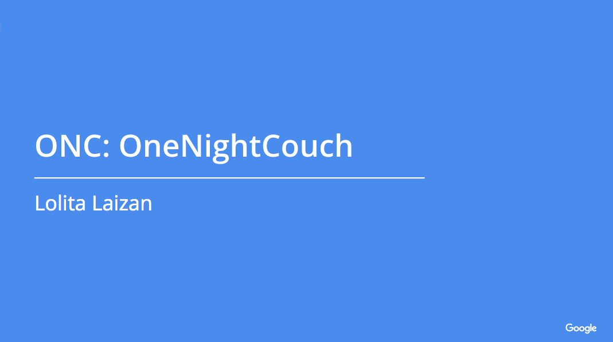
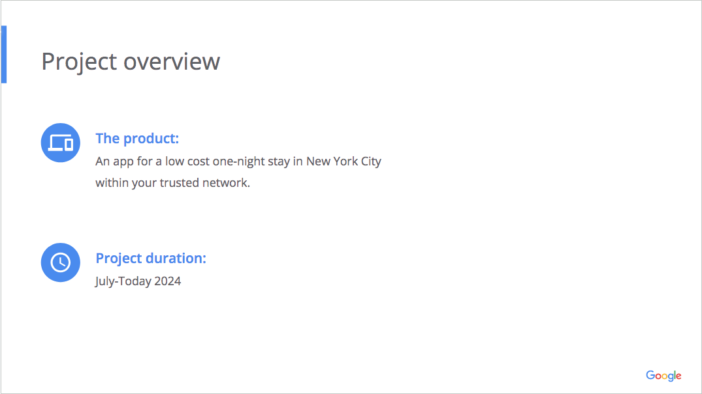
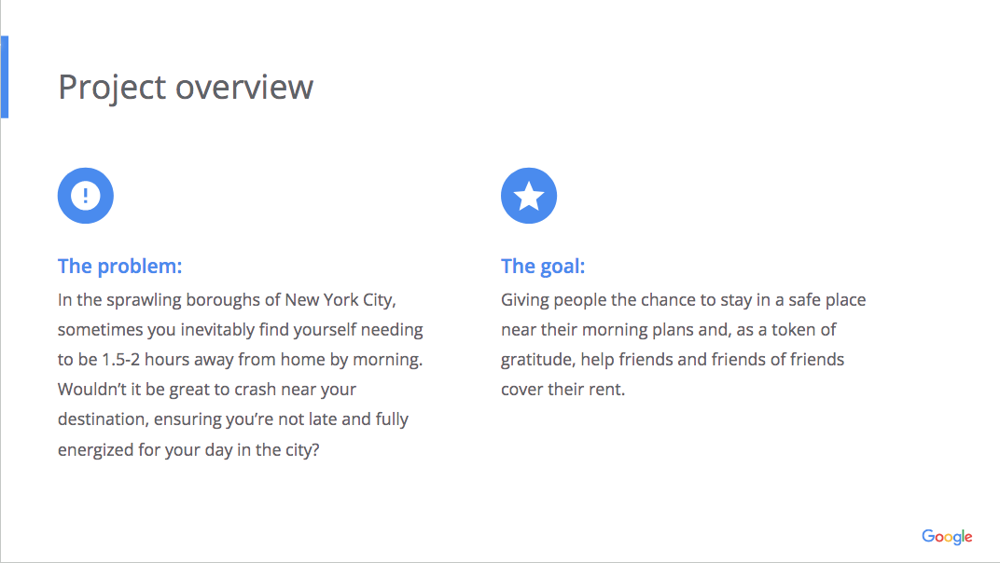
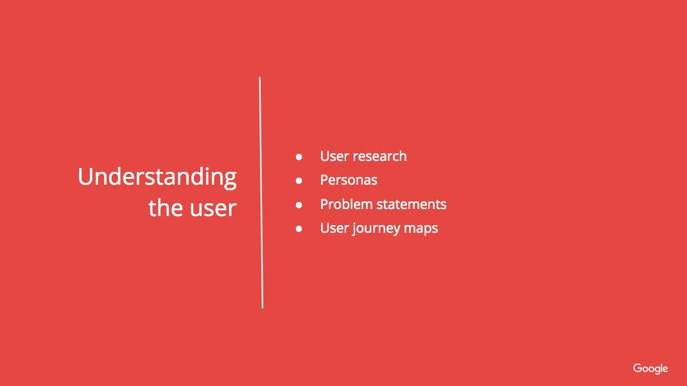
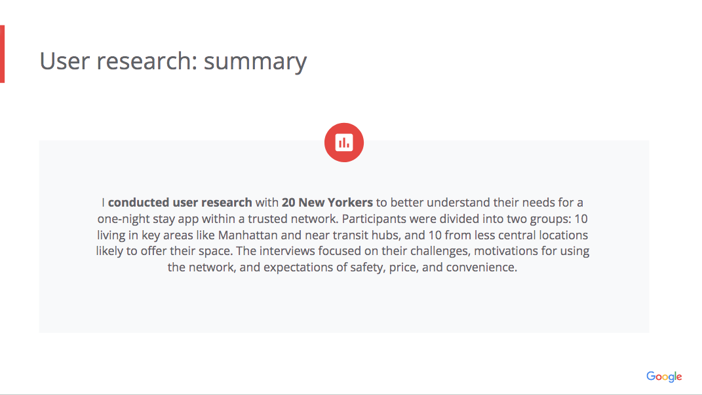
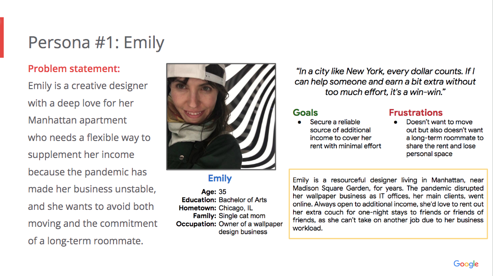
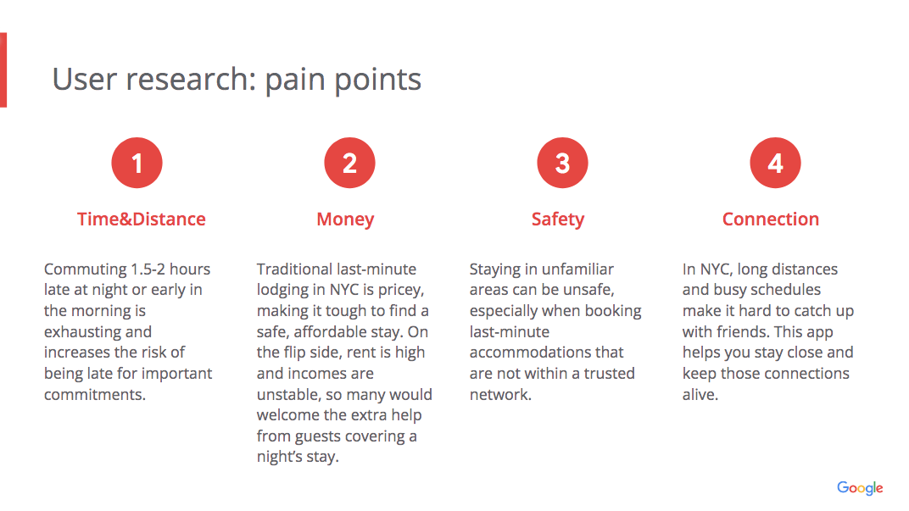
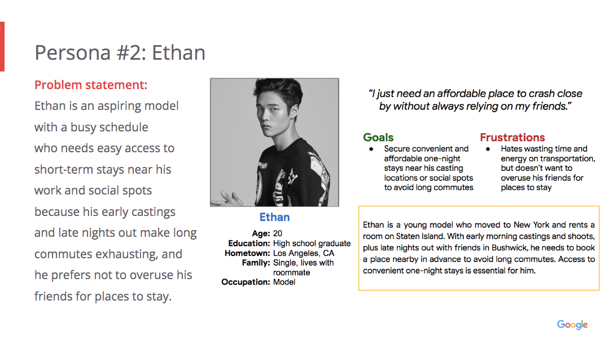

App idea, UX research, personas, problem statements, user journey maps
Google UX Case
*in progress
Introduction
In this case study, we explore the conceptualization, research, and design process for a new Google app aimed at enhancing user experience. This project involved creating user personas, mapping user journeys, and addressing key problem statements.
★



★




